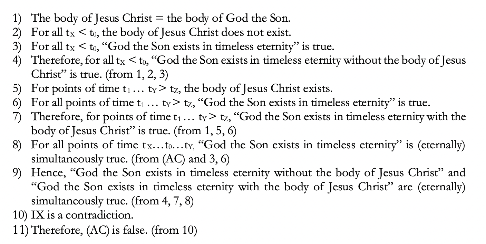

What does Christanity affirm about the Incarnation?
The Incarnation of Jesus Chirst is a central faith in Christanity which confesses that the second divine hypostasis (i.e God the Son or the Logos) of the triune Godhead became incarnate or “came down/clothed himself in the flesh of Jesus Christ'' in order to redeem the world from the burden of sin. Christians claim that the Incarnation fits the data of the Scripture, with one of the more prominent pieces of evidence being John 1:1 and John 1:14.
But for the relevancy of our argument, we will focus on one question. Is God the Son (Second Hypostasis) atemporal? St. Gregory of Nyssa (c.355 - c.394) states the following:
“One the one hand, because of the existence of the Son is not marked by any intervals of time, and the infinitude of His life flows back before the ages and onward beyond them in an all-pervading tide, He is properly addressed with the title of Eternal…
Extensions in time find no admittance in the Eternal Life; so that, when we have removed the thought of cause, the Holy Trinity in no single way exhibits discord with itself; and to Its is glory due.” (Against Eunomius, I, 42; in NPNF 2, Vol. 5)
Thus, God the Son is atemporal entity, who cannot be marked by any intervals of time and from here we can proceed to the argument.
Why the Incarnation cannot logically work with an Atemporal Deity.
For the sake, of simplicity and organization, we will use an image of the argument and present the information from there.

Key
tx = Prior to point of time of Mary’s Conception
t0 = Point of time of Mary’s conception
t1= After Mary’s conception.
tz = Point of time of Christ’s ascension
ty = Prior to point of time of Christ’s ascension
AC = atemporalism
Premise 1: The body of Jesus Christ is the same as the body of God the Son:
The Hypostatic Union asserts that there are two natures whom share one body. We know that this “body” is the body of Jesus Christ, and thus the divine physis has a body, which exists within time. This does not affect the divine nature (i.e God the Son) as Christians affirm.
Premise 2,3,4: Prior to Mary’s conception, the body of Jesus Christ did not exist, and prior to Mary’s Conception God the Son exists in timeless eternity. Therefore, Prior to Mary’s conception, God the Son exists in timeless eternity without the body of Jesus Christ.
The premises are quite simple. Prior to the birth of Jesus or Mary’s conception, the body of Jesus Christ did not exist. But knowing that God the Son (Second Hypostasis of the Trinity) is eternal, we can state that God the Son has always existed, and we will touch on this soon. Thus if we combine these two premises, we can assert that prior to Mary’s conception, God the Son existed in timeless eternity without the body of Jesus Christ because the body did not exist before the conception.
Premise 5: The body of Jesus Christ exists at the point of Mary’s conception prior to Christ’ ascension and at the point of Christ’ ascension.
As seen, we know that the at the moment of Mary’s conception, the body of Jesus Christ existed, and we know that prior to his ascension, which includes his childhood, his adulthood, years of preaching and teaching etc, his body existed. We know that up to the point of his ascension, the body of Jesus Christ also still existed. Thus from these points of time, is where the body of Jesus Christ exists.
Premise 6: At all points of time, God the Son exists in timeless eternity is true.
Premise 6 asserts that there is never a time, or moment in which God the Son doesn’t exist in timeless eternity hence “eternity”. Quite a simple concept.
Premise 7: At the point of Mary’s conception, prior to Christ’ ascension and at the point of Christ’ ascension, God the Son exists in timeless eternity with the body of Jesus Christ.
From Premise 5 and 6 we can assert that God the Son who at all periods of time exists in timeless eternity, but from after Mary’s conception and onward, God the Son exists in timeless eternity with the body of Jesus Christ. From Premise 5, we know the periods of time of which the body of Jesus Christ does exist, and from Premise 2 we know when the body of Jesus Christ does not exist (Prior to Mary’s conception)
Premise 8: God the Son exists in timeless eternity is eternally simultaneous true.
Explanation of “eternally simultaneous true”
We know that second hypostasis of the triune Godhead, God the Son is eternal, meaning he has no beginning or end, and has always existed; everlasting. Thus when one says something is “eternally true” it means that it has always been true, or there was never an instance where “this” was not true.
Secondly, earlier in the paper we established the grounds of atemporalism in Christian doctrine, and affirmed that the Christian God or in this case God the Son is atemporal or exists outside of time. We also established that as an atemporal deity, God the Son cannot be marked by any intervals of time. St. Augustine, elaborates:
“Eternity itself is the substance of God, which has nothing that is changeable. There is nothing there that is past, as if it were no longer, nothing there is future, as if it not yet were. There is nothing except, “is”. (Explanations of the Pslams, 101,2,10; in JUR-3, 21)
Here, Augustine states, that there is no “past” or “future” but only is or present. He further asserts this, as he states:
…in the Eternal nothing passes away, but that the whole is present; but no time is wholly present; and let him see that all time past is forced on by the future, and that all the future follows from the past, and that all, both past and future, is created and issues from that which is always present…(Confessions, Book 11, chapters 11 and 13 and 30 and 31; in NPNF 1, Vol. 1)
Knowing that in reality, there is no past or future but only “is” for God, we can conclude that God is simultaneous. Our minds cannot fully grasp the eality of atemporalism, thus why we give periods of time to God’s actions. Though this is purely conceptual. For example, God saw me throw a rock yesterday, today he saw me eat popcorn and tomorrow he will see me swim in a pool. Conceptually, these events are witnessed by God in distinct periods of time, but in reality, God is witness to these events at the same time, or all at present meaning their is no distinction of time in reality, hence the word "simultaneously"
So when one states, that God the Son exists in timeless eternity, is eternally simultaneously true, we can elaborate by saying that this claim is true eternally at the same time.
Premise 9: “God the Son exists in timeless eternity without the body of Jesus Christ” and “God the Son existing in timeless eternity with the body of Jesus Christ” are eternally simultaneously true. This is a logical contradiction.
We know that prior to Mary’s conception, God the Son exists in timeless eternity without the body of Jesus Christ because a body cannot exist before its conception. We also know that God the Son exists in timeless eternity with the body of Jesus Christ after Mary’s conception, prior to his ascension and at the point of his ascension.But as affirmed previously, these distinct periods of time, all happen at the same time in reality. There fore, there is no real temporal distinction between “Prior to Mary’s conception” and “After Mary’s conception” for God the Son they all occur simultaneously. Hence here is where the logical negation comes in.
The Problem:
God the Son exists in timeless eternity with and without the body of Jesus Christ, is eternally simultaneously true.
The statement above is a logical contradiction. God the Son, here has distinct states, (one with the body of Jesus and one without the body of Jesus) which eternally true simultaneously. But this is a negation, because two distinct and contradictory/opposite states cannot occur at the same time. God cannot be something and not be that thing concurrently as someone cannot be married and be a bachelor concurrently. It is logically incoherent and unsound.
Conclusion:
As presented, I conclude that the Incarnation of an Atemporal Deity (God the Son) is logically garbled. I would presuppose two ways to get rid of this logical incoherence, is to either to accept that God is temporal, which would contradict the Church Fathers, or we could reevaluate the Incarnation, and the implications of an atemporal deity coming down in the flesh, but surely rejecting the Incarnation is an option. We could reject the Christian God, but that’s not a likely not an option if one has an ounce of faith in what they believe in. This argument was inspired, and used from Academia, as you will see in the References.
LPI, Who died on the cross
When we ask christians "Who died on the cross", they will answer Jesus, now we have to see what they mean by this. We ask, did the hypostasis of the 2nd person of the trinity suffer.
They would reply with the answers in this list:
1. "no", if they say the divine person suffered, this would break the perfect being theology, which states you cannot attribute/predicate imperfect attributes and defects to god.
2. "The human nature suffered" This answer fails because we are not asking a what question, we are asking a who question.+Now please, do not conflate the "what" and the "who" categories. Since the divine hypostasis of the son has 2 natures(what) and 1 person(who). My question who suffered/died on the cross should be answered with a who not a what. Otherwise, I will simply charge you with conflating the terms.
YT link
https://m.youtube.com/watch?v=YogbPC2otrs
The Human Nature Dilemma
Premise 1: God is immaterial
Premise 2: God doesn’t change
Premise 3: God took on flesh
Conclusion: God changed by taking on flesh, therefore Christianity contradicts itself thus making it false